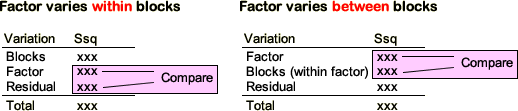

| No difference between blocks and factor does not affect Y yijk = µ + εijk |
| The blocks differ , but factor does not affect Y yijk = µ + βi + εijk |
| The blocks differ and factor affects Y yijk = µ + βi + γj + εijk |
Hierarchy of models for factor that varies within blocks
The usual analysis of experiments in which the experimental units are grouped into blocks is based on the following hierarchy of models for a response value yijk that is in block i and gets factor level j.
| No difference between blocks and factor does not affect Y yijk = µ + εijk |
| The blocks differ , but factor does not affect Y yijk = µ + βi + εijk |
| The blocks differ and factor affects Y yijk = µ + βi + γj + εijk |
Hierarchy of models for factor that varies at block level
As mentioned on the previous page, the above hierarchy is not useful if the factor is varied at block level since adding the term for the factor (lower arrow) does not reduce the residual sum of squares. A more useful hierarchy adds the block effect after the factor effect.
| No difference between blocks and factor does not affect Y yijk = µ + εijk |
| The f actor affects Y but there are no differences between blocks yijk = µ + γj + εijk |
| The f actor affects Y and the blocks differ yijk = µ + βi + εijk |
Note that there is no need for an explicit term for the factor in the bottom model since the factor is confounded with differences between the blocks. The effective number of parameters added is the difference between the number of blocks and the number of treatments.
Evidence for a factor effect
In earlier chapters, testing the effect of a factor involved comparison of the mean sums of squares explained by the factor and the mean residual sum of squares from the full model with all terms for factors and blocks. This is not appropriate for factors that are varied at block level.

When a factor is varied at block level, the factor sum of squares should not be compared to the residual sum of squares. Instead,
The factor sum of squares must be compared to the sum of squares that describes variation between the blocks.
This is explained in the diagram below.
Artificial data set
The diagram below shows data from an experiment in which the 45 experimental units are grouped into 9 blocks of 5 units. A factor with three levels (A, B and C) is varied at block level:
The slider on the top left adjusts the difference between the factor means.
The more variable the factor means (and hence the greater the factor sum of squares), the more obvious it becomes that the factor does affect the response.
Click the checkbox No variation within blocks under the sliders to make all observations equal within each block. Observe that:
Even if there is zero residual sum of squares, we cannot be sure that the factor affects the response because of the variability between the blocks.
Finally drag the slider to adjust variability between blocks and observe that:
The more variable the blocks, the weaker the evidence that the factor affects the response.
The evidence for a factor effect therefore depends on the relative sizes of the factor sum of squares and the sum of squares describing variation between the blocks.